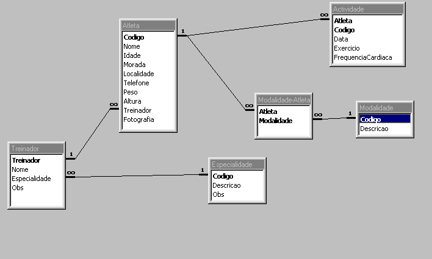

Desenvolver uma Base de Dados em Access para permitir aplicar os conhecimentos adquiridos durante o módulo de Access, esta base de dados deverá ter a seguinte estrutura:

Para o trabalho o aluno deverá criar as tabelas, seleccionar os tipos de dados mais apropriados para os campos e deverá defenir as relações entre as tabelas.
As relações deverão respeitar as regras de integridade referencial ficando opção de propagar a actualização dos campos seleccionados e propagar a eliminação dos campos seleccionados ao critério do aluno
Parte-se do pressuposto que as tabelas são carregadas com dados de forma a ser possível confirmar quer as consultas, quer os relatórios.
O trabalho deverá ser entregue até às 18:00 Horas do dia 18 de Junho por mail para o Professor ou em disquete na secretaria devidamente identificada.
Qualquer dúvida podera ser enviada para aqui
AnteriorNotas Finais
Exame